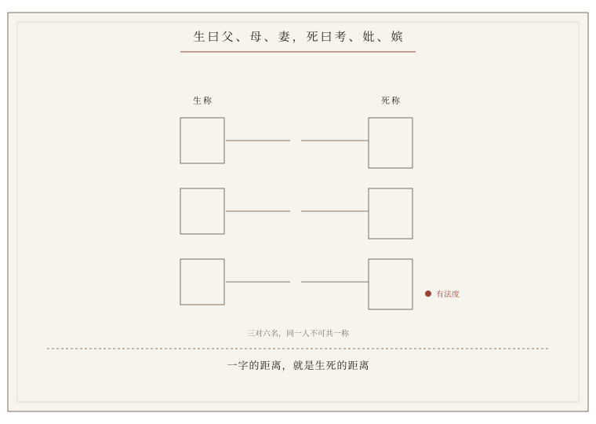

曲礼下 · 二·七十四 · 第 197 课
生曰父、曰母、曰妻，死曰考、曰妣、曰嫔。注「嫔，妇人有法度者之称也」。
说什么事：生死两套称谓，只三人。
落在哪一层：礼，兼及礼意。论称谓之别，与所以别。
为何编在此位：上节论祭时加皇，此节论平时生死异称。一祭一时，一日常。
【经】生曰「父」、曰「母」、曰「妻」，死曰「考」、曰「妣」、曰「嬪」。
【注】嬪，婦人有法度者之稱也。《周禮》：「九嬪掌婦學之法，教九御婦德、婦言、婦容、婦功。」
【疏】生时所称也。不言祖及夫者，以生号无别称也。前是宗庙之祭，加其尊称，故父母并曰皇也；此谓非祭时所称也。「《周礼》九嫔掌妇学之法，教九御」者，此证嫔有德之名，《周礼》以九嫔教宫内之妇人学四德也。谓「九御」者，自世妇以下，九九而御者也。「妇德」谓贞顺也，「妇言」谓辞令也，「妇容」谓婉娩也，「妇功」谓丝枲也。此生死异称，出《尔雅》文，言其别于生时耳。若通而言之亦通也。《尚书》云「大伤其考心」，又云「聪听祖考之彝训」，《仓颉篇》云「考妣延年」，《书》云「嫔于虞」，《诗·大明》云「曰嫔于京」，《周礼》九嫔之官，并非生死异称矣。
考 成。德行之成。
妣 媲。媲于考。
嫔 妇人有法度者之称。
九嫔、九御 《周礼》宫官。嫔教四德。
通言 疏「若通而言之亦通也」。生死之称有时通用。
活着称「父」「母」「妻」，死了称「考」「妣」「嫔」。
三对六名，讲一件事：同一人，活着与死了不能用一个称呼。称谓的分别是礼最小的单位，也是最难改的一层。
第一层 不言祖及夫 疏「不言祖及夫者，以生号无别称也」。祖与夫生前亦有专称，故不在此列；父母妻三者在生只有通称，故死须另立。
第二层 祭称与非祭称 疏「前是宗庙之祭，加其尊称，故父母并曰皇也；此谓非祭时所称也」。祭时称皇考，平时只称考。同一死，尚有两级。
第三层 嫔以德称 注「妇人有法度者之称」。妻死称嫔，不只是换字，是把评价放进了称呼里——须有法度，才当得起这个字。
第四层 通言之辨 疏列出《尚书》「祖考」、《仓颉篇》「考妣延年」、《诗》「曰嫔于京」等，证生死之称有时通用，然此经所立者是其「别」。礼立常名，不废通语。
与今日何干 墓碑上写「先考」而不写「父」，一字的距离，就是生死的距离。
| 左 | 右 |
|---|---|
| 生曰父 | 死曰考（成也） |
| 生曰母 | 死曰妣（媲也） |
| 生曰妻 | 死曰嫔（有法度） |
| 祭时称皇考 | 平时只称考 |
| 不言祖及夫 | 生号本有专称 |
| 生死异称出《尔雅》 | 通言亦通 |
画左右两列各三枚方牌，左列三牌大小相同（示生称），右列三牌略高（示死称）。每列之内三牌等距纵排；左右两列之间画三道短横线，各连一对，横线中段各断一处（示生死之隔）。右列最下一牌之侧另置一枚极小方点（示「有法度」之评）。不写文字、不画人。赭色只用在右列最下一牌与其旁的小方点。
